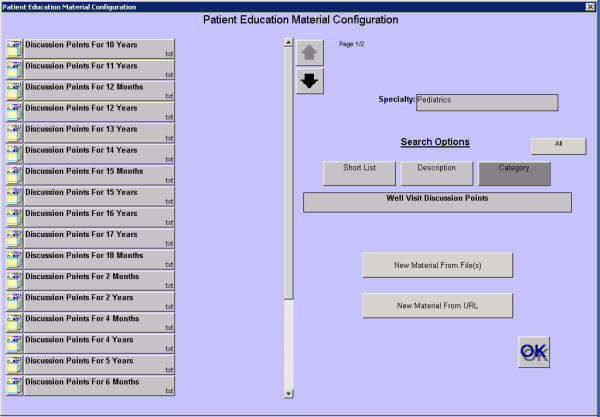

|
Description
Use this screen to maintain the list of available patient materials. When the screen initially appears, the short list of patient materials appears. You can search by description or category if an item does not appear on the short list.
The definition of patient materials has expanded to allow you to configure a website URL as a patient material. In version 5, patient materials can be files on site, or links to the Web.
How to Access This Screen
Access this screen by selecting the Patient Materials button on the Configuration list from the Office View.
Screen Example

Want to Learn More?
Related Solutions
Concept: Short Lists
Concept: Patient Materials
How to: Add Patient Education Materials
How to: Modify a Short List
|